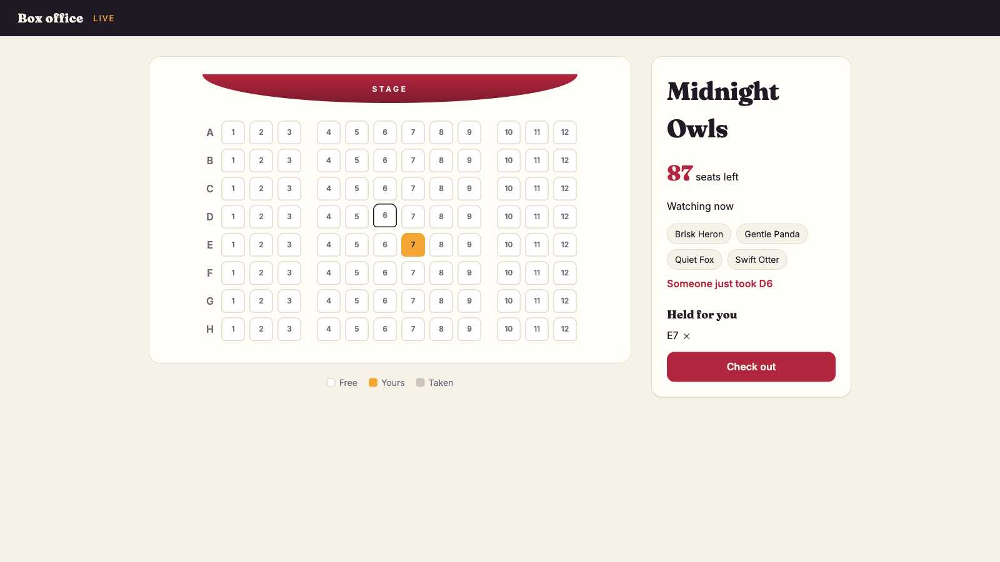

The server holds the state. The browser renders it. One small app, one concept at a time.
The Orion technique (orion-tour.pages.dev), on http4k
The problem
Live, multi-user UIs get built twice
In the browser
A state store. A cache. Optimistic updates. An API client. A socket protocol to hear about other people’s changes.
On the server
The database. An API shaped for the client. Push events, each carrying enough data for the client to patch its copy.
Two copies of the state, kept in sync by hand.
The problem
Server-rendered apps keep one copy, but nothing moves
Classic server rendering
One copy of the state, in the database. Render HTML and send it. Correct, and static: you see other people’s changes when you refresh.
What we want
Every screen updates when anything changes, for everyone looking at it, with no second model in the browser.
Keep the single copy. Add liveness.
The idea
The server holds the state. A change says what changed, not how.
Multiplayer by default
Your own change reaches you the same way as everyone else’s.
Nothing drifts
Every screen is re-read from the database.
Nodes are stateless
A shared database and a shared channel for “something changed”.
The example
A box office: fans grab seats for a show

Click a seat to reserve it; everyone watching sees it taken
Two fans click the same seat; one of them gets it
Reservations lapse after five minutes
Check out, and a background job takes payment
A map of the talk
Everything in Fanbelt is this loop
Browsera click posts to the server
Routea POST, bound to one operation
Operationchanges the database, says which states changed
Busafter commit, a topic: the name of what changed
Browserthe new HTML is swapped in
Streamthe page’s open connection
Regiona live part of a page: re-reads, re-renders
Subscribedevery region showing that state
The amber boxes are the two things Fanbelt asks of your code: an operation names what changed, and a region re-reads. The library does the rest.
The domain
Start at the centre
Plain Kotlin: the values, the rows, the logic. None of it knows about the web.
Values
Values: every id and name is a type
class ShowId private constructor(value: UUID) : UUIDValue(value) {
companion object : UUIDValueFactory<ShowId>(::ShowId)
}
class SeatRef private constructor(value: String) : StringValue(value) {
companion object : StringValueFactory<SeatRef>(::SeatRef, { … }) // "F12"
}
data class ShowSeat(val show: ShowId, val seat: SeatRef)
A value type validates its own shape: “12F” cannot become a SeatRef, so nothing downstream handles raw text
Storage
Rows and tables: typed access to the database
data class Booking(override val id: ShowSeat, val fan: ViewerId, val expiresAt: Instant,
val order: OrderId? = null) : Identified<ShowSeat>
class BoxOfficeTables(tables: Tables) {
val shows = tables<ShowId, Show>(SHOWS)
val bookings = tables<ShowSeat, Booking>(BOOKINGS)
}
Rows are data classes. Tables are typed handles to them.
The domain reads and writes storage only through these
The domain class
The domain class: your logic over your rows
class BoxOffice(private val tables: BoxOfficeTables, private val clock: Clock) {
fun booking(pick: ShowSeat) = tables.bookings.get(pick)?.takeIf { it.liveAt(clock.instant()) }
fun reserve(pick: ShowSeat, fan: ViewerId) { … }
fun release(booking: Booking) = tables.bookings.delete(booking.id)
}
Built for each transaction, from that transaction’s tables
No HTTP, no permissions, no publishing. It works on rows.
Time is injected as a clock, so tests can move it
The feature
One ring out: the feature
What people can see and do with that domain. No web yet, and testable without one.
Feature
Feature: what people can see and do
sealed interface Actor {
data class Fan(val id: ViewerId) : Actor
data object System : Actor
}
class BoxOfficeFeature(clock: Clock) :
Feature<BoxOffice, Actor>({ tables -> BoxOffice(BoxOfficeTables(tables), clock) }) {
… // see: states do: operations
}
Owns its domain, built for each transaction
Declares who acts: a fan, or the system
No web. It can be driven from a test.
State
State: a named read. Its name is its topic.
val shows by state { boxOffice -> boxOffice.shows() } // "shows"
val bookings by state(ShowId) { boxOffice, id -> boxOffice.bookings(id) } // "bookings:<id>"
A state reads the domain. It is what a part of a page shows.
Most states are about one thing, so they take a key: the bookings for one show
bookings.topic(id) is the topic "bookings:<id>": the name used to announce that this state changed, and to listen for that
Operation
Operation: one block, in a transaction
val reserve by operation(fan) { boxOffice, actor, pick: ShowSeat ->
… // does this show have that seat?
val reservedBy = boxOffice.booking(pick)?.fan
if (reservedBy != null && reservedBy != actor.id)
return@operation Rejected(seatField, "Someone just took ${pick.seat}")
boxOffice.reserve(pick, actor.id)
Changes.of(bookings.topic(pick.show))
}
fan says who may act. It runs in one transaction, and ends in one of three ways: Changes, Rejected or Denied.
Changes
Changes: what changed, not how
Changes.of(bookings.topic(show)) // "the bookings for this show changed" — re-read them
Changes.none()
A topic carries no data. Whoever receives it re-reads the state from the database.
Published after commit. A refusal rolls back and publishes nothing.
Duplicates and reordering do no harm: there is nothing to version or merge
Only an operation’s Changes publish. The domain and the HTTP layer never do.
Rejected
Rejected: two fans, one seat
val reservedBy = boxOffice.booking(pick)?.fan
if (reservedBy != null && reservedBy != actor.id)
return@operation Rejected(seatField, "Someone just took ${pick.seat}")
boxOffice.reserve(pick, actor.id)
Ann and Bob click F12 at the same moment. A tenant’s writes run one at a time, so the second check sees the first reservation.
The second fan is told “Someone just took F12”, the same way as any invalid input
A write may run twice, so an operation makes no external calls. Payment is taken by a background job.
Rule
Rule: who may act
val fan by rule { actor -> if (actor is Actor.Fan) Allowed(actor) else Denied }
val reserve by operation(fan) { boxOffice, actor, pick: ShowSeat -> … }
If the rule refuses, the block never runs
What it finds is handed down, so actor here is an Actor.Fan
It is named for what it hands down
Rule
Load it, check it, pass it down
val yourBooking by rule { actor, pick: ShowSeat ->
val booking = domain.booking(pick)
when {
actor !is Actor.Fan -> Denied
booking == null -> Unavailable(seatField, "Your reservation of ${pick.seat} has lapsed")
booking.fan != actor.id -> Denied
else -> Allowed(booking)
}
}
val release by operation(yourBooking) { boxOffice, _, pick, booking -> … }
Ownership is a rule, in the same transaction as the change
Rule
A rule answers one of four ways
ALLOWED
Here is what you came for
UNAVAILABLE
It has gone. A race, so the viewer is told why.
DENIED
I see you, and no. A 403.
HIDDEN
As far as you know, it doesn’t exist. A 404.
The page never shows a Denied button, so there is nothing to display
Someone else’s private thing and a missing thing answer alike, so Hidden gives nothing away
A rule is a state, so an operation, a region and a route can all ask the same question
A Denied or Hidden is reported as an event, with no actor or input
Rule, from sl4k
Rules build on rules
val yourMessage by rule { viewer, ref: MessageRef ->
read(visibleChannel, Attempt(viewer, ref.channel)).then { channel ->
… // load the message, check its author
}
}
then carries on from Allowed. Any other answer stops there, so an outsider stays Hidden.
A rule’s key is an Attempt: who is asking, and for what
Test it, with no HTTP
Tests without HTTP: a missing publish fails a test
val tenant = TestTenant()
val boxOffice = BoxOfficeFeature(tenant.runtime.clock)
tenant.execute(boxOffice.reserve, Actor.Fan(ann), ShowSeat(show, f12))
tenant.read(boxOffice.bookings, show) // fails if it changed without its topic
tenant.tick(Duration.ofMinutes(5)) // the clock moves; nobody sleeps
The feature has no web dependency, so it runs in a test with no server
One in-memory tenant, with the clock and randomness controlled by the test
read records each state’s value and topics. A change without a publish fails the next read.
The web
Out of Kotlin: the web
Two new things: the browser, and HTTP. http4k on the server, Datastar in the browser.
Just enough http4k and Datastar
http4k on the server, Datastar in the browser
routes("/shows/{show}" bind GET to { request: Request -> Response(OK).body(…) })
http4k: a server is a function from Request to Response, and routes compose them. Everything Fanbelt gives you to mount is one of those functions.
Datastar: a small script that gives HTML attributes behaviour. An attribute posts to the server. The response is HTML to swap in, or a signal: a small piece of browser state, such as an error message.
The browser holds one connection open and swaps in the HTML that arrives on it
Region
Region: a live part of a page, showing one state
val shows = Region("shows", renderer, boxOffice.shows) { shows -> ShowsView(shows) }
// id templates state view: the model
Model: read once
The state’s value, shared by everyone watching
View: per viewer
The model and the request, nothing else
Template
Renders the view as HTML
Page
Page: one route for the first render and the stream
The browser loads the page: every region is rendered into the page’s template
Datastar then asks the same URL for an event stream, and gets every region on the page, live, over one connection
Route
An operation bound to a POST route
val asFan = { request: Request -> Actor.Fan(principal(request).id) }
"/shows/{show}/seats/{seat}/reserve" bind POST to
boxOffice.reserve(workspace, asFan) { ShowSeat(showId(it), seat(it)) }
ACCEPTED
Any error on the page is cleared
REJECTED
The reason is shown, to this viewer only
DENIED
403, and nothing is shown
HIDDEN
404, as if it weren’t there
Invoking the operation with the workspace, the actor and its input gives a handler. It never answers with new UI and never publishes.
Liveness
A region re-renders when something it read changes
Each read records the topics it touched, and the region subscribes to them. When one is published, the region re-reads once, renders for each viewer, and sends HTML only to the screens where it changed. There is no subscription list to maintain.
Putting it together
Ann reserves F12: every concept, in order
1Click
The click posts to the seat’s reserve route
ROUTE
2Parse
The lenses turn the POST’s path into a ShowSeat, and its cookie into a Fan
VALUES · ACTOR
3Decide
If F12 is free, Ann reserves it: checked and written in one transaction
OPERATION · DOMAIN
4Announce
After commit: the bookings for this show changed
TOPIC
5Re-read
The seat map reads once and renders for each viewer
REGION
6Morph
Every watching screen shows F12 as taken. Ann’s shows it as hers.
STREAM
Derived states
Derived state: built from other states, in one snapshot
val seatMap by derived { id: ShowId ->
val live = domain.live(read(bookings, id))
val show = domain.show(id)
if (show == null) null else SeatMap(show, …) // every seat, with who reserved it
}
read(bookings, id) reads another state. The derived state subscribes to whatever it read, so this redraws when the bookings change.
All the reads happen in one transaction, so the model is a consistent snapshot
A region still shows one state. Several sources make a derived state, not a second kind of region.
Keys
The key is which view. The topic is what changed.
Region("seats", renderer, showId, boxOffice.seatMap) { map -> SeatMapView(…) }
Changes.of(bookings.topic(show)) // redraws this show's seat map, not the others
The region’s key comes from the request, usually the URL. Everyone watching the same show shares one model.
A reservation on one show redraws that show’s seat map and no other
Filters and page sizes belong in the key. The topic stays coarse, so operations never need to know which views are open.
The URL holds view state
If the server renders from it, it is in the URL
"/shows/{show}" bind showPage // the key, from the URL
Layout(…, subject = seats) // gone at first paint: a 404
if (map == null) return@Region ShowGoneView // gone while watched: a live view
Changing what you see is following a link, and the new page is live
Absence is a value: a state returns null and the view handles it
Only cosmetic state, such as whether a menu is open, stays in the browser
Per-viewer detail
Per-viewer detail: share the model, vary the view
<!-- in the shared seat map -->
<button id="seat-E7" data-reservedBy="{{reservedBy}}">7</button>
<!-- on each viewer's page -->
<style>[data-reservedBy="{{viewer}}"] { background: var(--mine) }</style>
The seat map is rendered once and shared. One CSS rule per page colours your seats.
When the read itself differs per viewer, key the region on the viewer. “Reserved for you” is keyed on (show, fan), and those renders are not shared.
Presence
Presence: who is here, while their page is open
val watching by presence(ShowId, ViewerId)
val header by derived { id: ShowId -> Header(…, read(watching, id).keys) }
The third kind of state. Not an operation: nothing to validate and no transaction. A lease, held while the page is connected.
Joining and leaving publish like any change. “83 seats left, watching now” is a derived state over the seat map and presence.
The app
The outer ring: the app
Several features, one space per theatre, background work, and the node that serves it.
Several features
Several features over shared infrastructure
class OrdersFeature(boxOffice: BoxOfficeFeature, …) : Feature<Orders, Actor>(…) {
val checkout by operation(fan) { orders, actor, id: ShowId ->
…
Changes.of(boxOffice.bookings.topic(id), tickets.topic(actor.id))
}
val basket by derived { shopper: Shopper ->
Basket(…read(boxOffice.bookings, shopper.show)…)
}
}
Dependencies run one way: orders reads the box office, and the box office does not know about orders
The show page mixes regions from both features on one stream. Checkout sells the seats and writes the order in one transaction.
Tenancy
Every request belongs to a tenant. Your code never sees its id.
val workspace = Workspace(infra, "/theatres/{theatre}", theatres::exists)
workspace.routes(oneTheatre) // unknown theatre → 404, everywhere
workspace.scope(request) // this theatre: execute, read, its bus
A tenant is whatever your product calls its spaces; here, a theatre
Storage is handed out already bound to one tenant, which is why the domain never saw a tenant id
A tenant’s writes queue. Different tenants never conflict.
Background work and time
Background work and time
val charged = paymentProvider(…)
when {
charged.status.successful -> scope.execute(orders.paid, Actor.System, order.id)
charged.status == PAYMENT_REQUIRED -> scope.execute(orders.declined, Actor.System, order.id)
}
val seatMap by derived { id: ShowId ->
…
live.filter { it.order == null }.forEach { staleAt(it.expiresAt) } // read again as each hold lapses
}
Checkout records the order. A background job takes payment and records the result through an operation, as System.
A read says when it goes stale. The seat map is read again as a reservation lapses, and not before.
Wiring
Wiring: App reads no configuration; main picks the infrastructure
Everything with side effects: the clock, randomness, outbound HTTP
AppInfra
Storage, the bus, presence
Node
The app and its background jobs
Where things live
Every app has the same shape
main.kt picks the technology and the starting data
App.kt wires the parts together, and nothing else
domain/ values, rows, read models, the actor
store/ tables, the list of tenants
feature/ domain classes and features
view/ view models and signals
web/ pages, regions, routes, lenses
jobs/ background work
fakes/ stand-ins for outside systems
The folders are the rings. Dependencies point inward.
Convention, as in Rails: nobody has to ask where something goes.
The bus becomes a backplane: each node tells the others which topics changed, through Redis or Postgres
No sticky sessions. Any node renders from the shared storage.
The feature, the pages and App are unchanged. Only main changes.
One contract, three drivers
One contract, three drivers
@Test fun `when two fans go for the same seat, the second is told someone just took it`() {
val ann = driver.fan("ann")
val bob = driver.fan("bob")
assertEquals(Verdict.Accepted, ann.reserved(SHOW, F12))
assertEquals(Verdict.Rejected("Someone just took F12"), bob.reserved(SHOW, F12))
}
Domain
TestTenant. Fast, and catches a missing publish.
UI
An emulated Datastar browser over the real App. No server, no sleeps.
Real browser
Playwright, for what only a real browser shows
Left out
What Fanbelt does not do
No client state
No store, no cache, no optimistic UI
No sync protocol
No event payloads, no CRDTs. Topics name what to re-read.